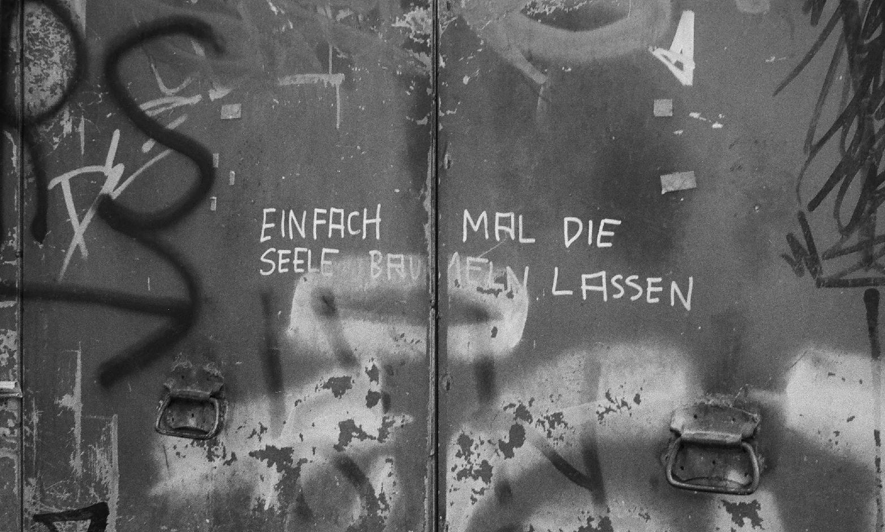

1,372 likes
corin.mb
Social platforms generally define a set of community guidelines in an effort to moderate the content posted on the platform and prevent
offensive or justiciable posts. Instagram partially restricts posting nudity or sexual activity, monitoring posts on a case by case basis.
This decision making process, which subsequently defines the users' perspective on community, society, beauty standards, and diversity, is essentially
a black box. In recent years, multiple cases concerning the deletion of only some of multiple similar images by people of different color, weight or
prominence following seemingly arbitrary or even discriminatory standards have surfaced and triggered various outcries by content creators and community.
An example is this image of model Nyome Nicholas-Williams taken in 2020, which was initially deleted by Instagram. Various other, more revealing photos taken by the very
same photographer Alexandra Cameron had stayed online while one of a black, plus sized woman was deleted amidst Black Lives Matter protests. Following multiple scandals, Instagram acknowledged
the need for the company to look at algorithmic bias and ammended its definition on what constitutes as squeezing of breasts in its policy.
2 minutes ago

1,012 likes
corin.mb
social media heavily relies on images to bring messages and information across. In 2013, a US survey found that 62% of
national Internet users create or post images online. The rise of sharepics, images created with the intent to be shared
online to spread information or news, has started to shift focus from text based information to image based information.
Visually impaired or blind people frequently rely on the digital screenreaders included in their end devices to navigate the
web and social media. Unless images online are complemented by content creators with an image description called alt-text,
screenreaders cannot read out the information conveyed via the image. Unfortunately, social platforms do not encourage the
use of alt-text strongly enough when posting. People of visual impairment and blind people are excluded.
2 minutes ago
954 likes
corin.mb
Image recognition algorithms based on artificial intelligence are on the rise and employed by governments, security apparati, commerce and in variants of tech.
Research shows that most commercial as well as open source algorithms are biased in their ability to recognize and distinguish people of color as opposed to
people with white skin. A similar gap in performance can be observed between the false match rates of women and men. In October 2020, a Canadian PhD student of the University
of Victoria by chance discovered a racial bias in Twitter's cropping algorithm. Images posted to Twitter whose ascpect ratio falls out
of the bounds of what can be displayed in a timeline are cropped to a more moderate aspect ratio. Twitter employed a "saliency algorithm" deciding on which sector of the original
image to display. Sample posts containing pictures like this indicated a bias in the algorithm towards cropping in on white people, which was later confirmed and mitigated by the company.
2 minutes ago